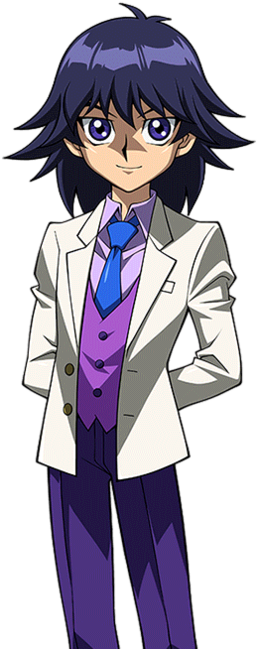
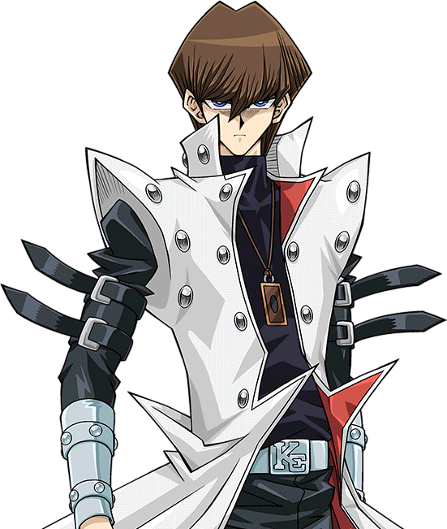

Mokuba Kaiba.
|
Mokuba Kaiba is the younger brother and moral anchor of Seto Kaiba, known for his deep loyalty and good nature. Corporate Knowledge:He possesses a surprising understanding of the family business, noticing stock buyouts and helping his brother with corporate affairs. Gaming:He is a skilled gamer and a champion of the game Capsule Monster Chess. Computers & Piloting:He has shown aptitude with computers, even translating difficult text for the "Wing Dragon of Ra" card, and managed to pilot an airplane when needed. |
 Office Number:
|
Seto Kaiba.

001 Champion Road
Langley Falls, WI 90210
555-452-7887
Business and Technology Achievements
Seto Kaiba is a business and dueling prodigy best known for becoming the CEO of KaibaCorp as a teenager and his relentless quest to become the world's greatest Duel Monsters player.
Corporate Takeover:
As an orphan, Kaiba defeated the current CEO of KaibaCorp, Gozaburo Kaiba, in a game of chess...
Corporate Restructuring:
He successfully transitioned KaibaCorp from a weapons manufacturer to a leading entertainment conglomerate...